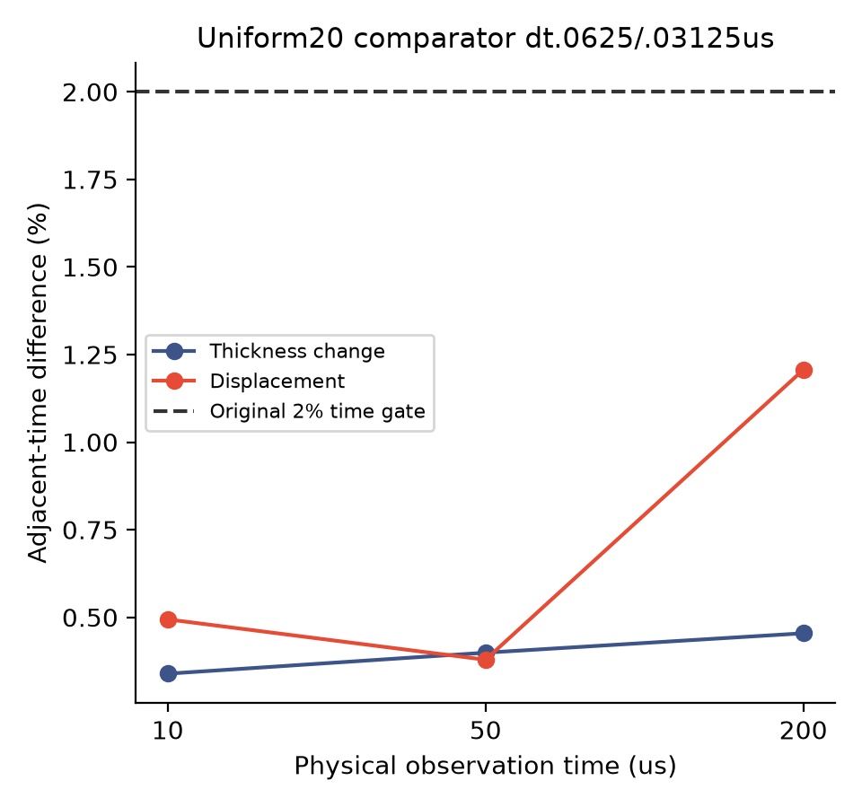
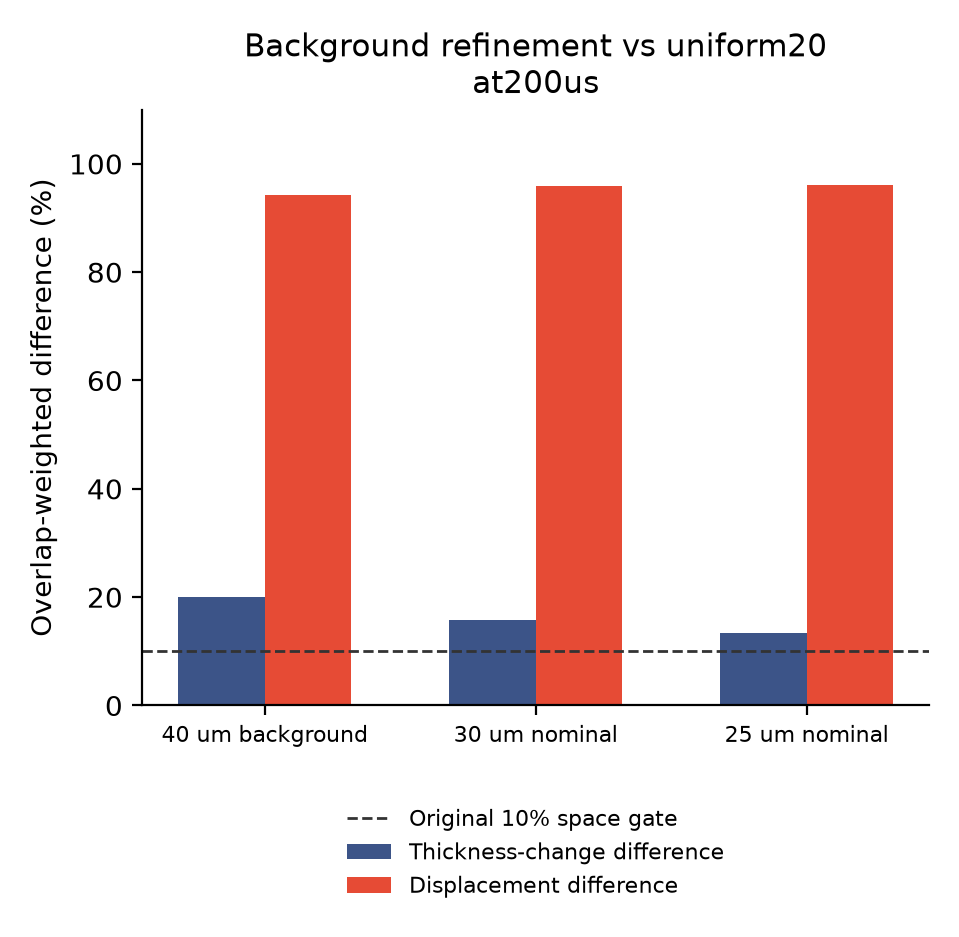
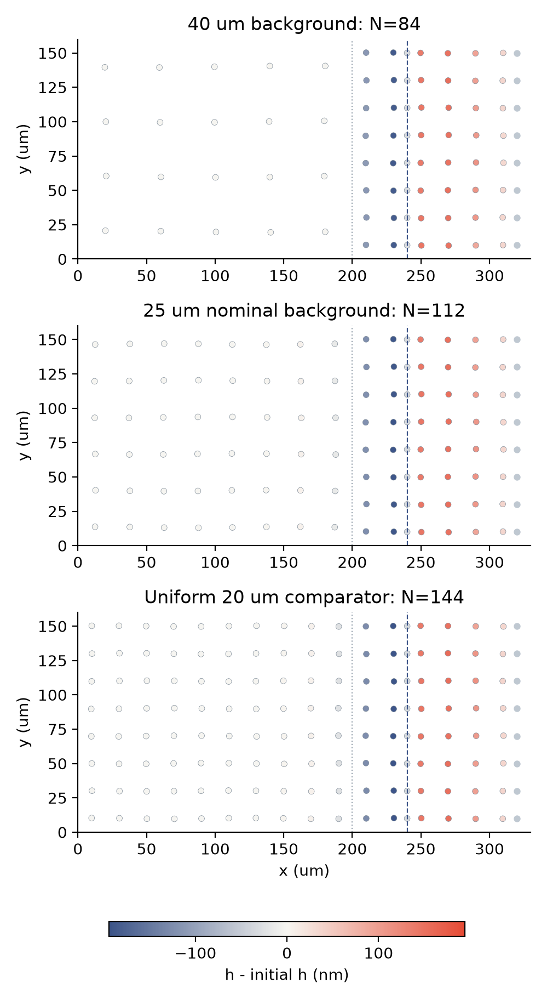

2026-11-13 · 回到实际运动膜的空间差异
时间检查通过，
空间差异仍未解决。
这阶段到底做了什么？
目标始终是同一个：让膜内部与边缘交换液体时，既算得守恒，也能可靠地预测膜厚和运动。当前在做可核验的数值原型，还没有完成真实皂膜实验的定量复现。
- 查收支：逐项核对液量、表面活性剂、力与功。几何移动造成的“区域归属变化”已经能独立复核；它本身不等于液体真的流过膜的边缘。
- 查时间：把时间步减半，检查同一时刻结果是否接近。此前局部布局通过；本轮均匀参照也通过。在200微秒时，膜厚变化差异0.45%，位移差异1.21%，均低于2%。
- 查空间：把膜内粒子放密，检查答案是否稳定。膜厚变化有所改善，但位移仍明显依赖布局；目前不能把局部加密当成可靠的整体替代。
可以把后两项理解为：既要确认“每秒多拍几帧”不会改变答案，也要确认“每块膜多放几个采样点”不会改变答案。前者通过，不代表后者也通过。
01 · 本轮实验：只加密膜内背景
边缘细间距保持20微米，数值细化起点仍为200微米，物理接口仍为240微米。膜内背景的名义间距从40降到30、25微米，材料、初始准备、力和排液模型、求解精度均保持不变。
整数格数会使实际横纵间距略有不同：名义30微米对应28.57×32微米，名义25对应25×26.67微米。每组的实际间距与粒子数均写入 数据摘要，没有把名义值当成实际值。
02 · 先确认参照自己的时间误差
均匀20微米布局分别用0.0625、0.03125微秒时间步计算相同200微秒窗口，在10、50、200微秒比较。两项差异均须低于原有2%门槛。若这一检查未通过，空间比较只能作为未验收诊断。

03 · 背景加密后的空间差异
用真实移动 Voronoi 单元重叠面积加权，比较相对于各自初始状态的膜厚变化和位移。两项都低于10%才算该时刻通过；完整10、50、200微秒结果保存在 逐项比较。

| 背景布局 | 膜厚变化差异 | 位移差异 | 200微秒门槛 |
|---|---|---|---|
| 40 um background | 20.06% | 94.24% | 未通过 |
| 30 um nominal | 15.85% | 95.85% | 未通过 |
| 25 um nominal | 13.44% | 96.08% | 未通过 |
04 · 保存的真实粒子布局
以下圆盘直接来自200微秒保存帧，共用膜厚变化色标。灰色为浴液节点，灰点线为细化起点，蓝虚线为物理接口。没有插值粒子或放大位移。

另一个待检验的物理尺度：从当前不溶性表活状态方程线性化，平坦初始膜内的弹性跨域时间约为 45.8 微秒。已有薄膜弹性波研究给出相关速度关系。这提示后续检查传播与反射；本批没有隔离这一机制，也没有把文献测量值替换成模型参数。
05 · 验收范围
新增网格参数先经过24项检查与七次启动／对照运行；默认轨迹及显式默认参数均通过九文件逐字节核对。原生每步账本与保存步独立 SI／GEOS 核对分开记录，失败和预算跳过项均保留。
结论与下一步
只加密背景，尚未解决实际运动的空间差异。在200微秒，膜厚变化差异从20.06%降至13.44%，位移差异却从94.24%变为96.08%，没有呈现改善趋势。这些百分比是两种离散布局之间的相对差异，不是真实实验误差，也不表示粒子移动了膜宽的96%。
下一步应先区分初始准备、空间离散和传播／反射对运动的影响，再决定是否值得进行更昂贵的全域加密。弹性波只是有文献依据的待检验线索，尚未确认成因。物理接口通量、真实排液和实验对照仍是后续验收项。
本轮已收尾：11/11原生运行完成，24项检查、19,206个接受步的原生收支／能量／力门槛通过；111个保存步分别通过独立标量与机械核对。原生计算累计约43.5分钟。121份原始文件（34.64MB）已逐字节归档为10个小于5MB的ZIP分卷。以上检查通过不改变空间门槛未通过的结论。本轮没有机器学习训练。
计划、数据、日志与复现
- 源码与归档映射
- 冻结计划 · 源码／二进制哈希与参数 · 原生计算结束时状态
- 布局与判定摘要 · 全部原判据比较 · 独立恢复切面估计
- 标量公式核对 · 机械量核对 · 原生日志
- 原始文件／分卷哈希 · 恢复校验脚本
- 原始数据分卷1（1.27MB）
- 原始数据分卷2（1.19MB）
- 原始数据分卷3（1.34MB）
- 原始数据分卷4（1.41MB）
- 原始数据分卷5（1.42MB）
- 原始数据分卷6（1.45MB）
- 原始数据分卷7（1.34MB）
- 原始数据分卷8（1.15MB）
- 原始数据分卷9（1.21MB）
- 原始数据分卷10（0.87MB）
恢复：python restore_raw.py REPORT_DIRECTORY NEW_OUTPUT_DIRECTORY。拒绝覆盖同名文件。大原始CSV保留本地，按小于5MB的ZIP分卷下载。全部图提供PNG与矢量PDF。